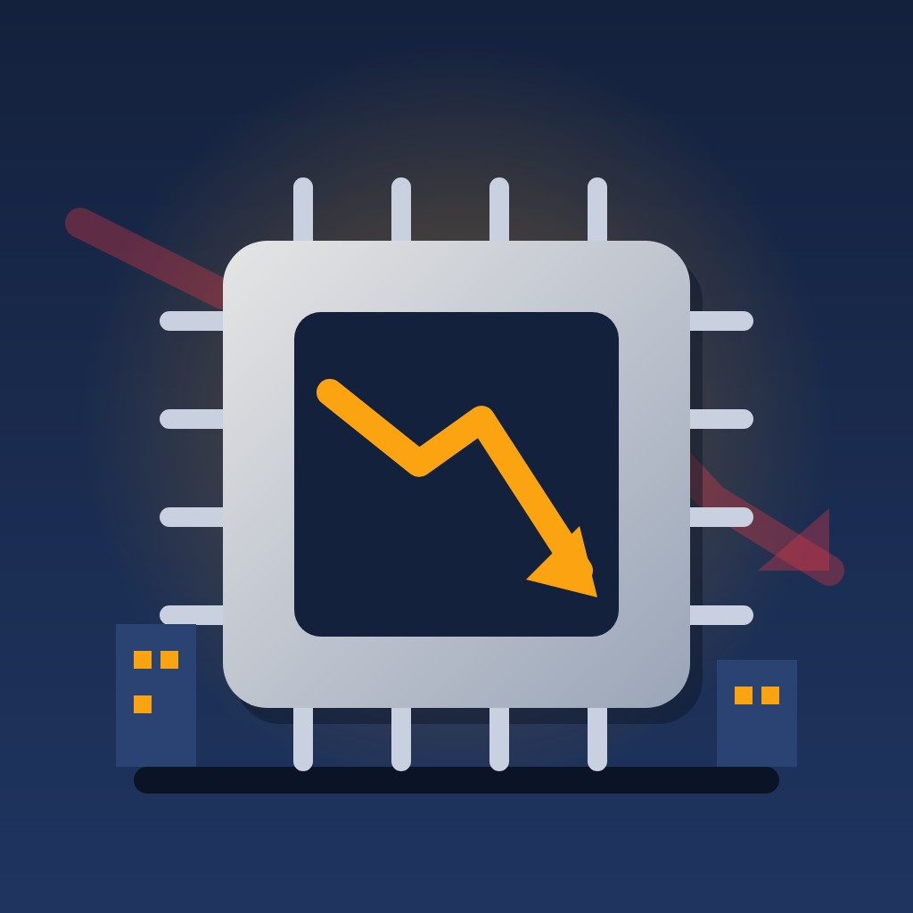

Business

Democratic midterm sweep sets off a global sell-off in AI and chip stocks
Technology shares fell sharply around the world on 5 and 6 November 2026 as investors priced in tighter scrutiny of artificial intelligence and data centres after Democrats won both chambers of Congress.
Abstract
Technology shares fell sharply around the world on 5 and 6 November 2026 after Democrats won both chambers of Congress, as investors weighed tighter regulation of artificial intelligence (AI) and data centres[1,2,3,4]. On 5 November the Nasdaq Composite fell 5.52% and the Dow Jones Industrial Average lost 3.44%, the worst day for American technology shares since April 2025[1,2]. Nvidia and Qualcomm each fell more than 9%[5], and the Philadelphia Semiconductor Index dropped more than 12%[1]. In Seoul a circuit breaker halted trading after the Kospi fell 7.84%[6]. The Taiex's weekly fall of 12.2% was the biggest since 1991[3]. Public opinion had turned against data centres: 71% of adults surveyed by Gallup opposed building one in their area[7], and 40 of 41 local measures on the 3 November ballot went against development[8]. President Trump is expected to veto AI bills that could slow the industry's growth, and overriding a veto requires a two-thirds vote in each chamber[9,10]. Analysts variously attribute the fall to regulatory risk and to valuations that were already stretched[3,11,12]. The election cannot be shown to be the only cause, since Qualcomm's results were also in focus and oil prices moved sharply on news about Iran[5,13].
Key points
- The Nasdaq Composite fell 5.52% and the Dow lost 1,833.06 points on 5 November, the worst day for American technology shares since April 2025[1,2].
- Nvidia and Qualcomm each fell more than 9%, and Nvidia lost nearly US$450 billion in market value[5].
- Seoul's Kospi fell 7.84% to 4,961.62, triggering a 20-minute circuit breaker, the 11th this year[6].
- In a Gallup survey, 71% of adults opposed building an AI data centre in their area, and 40 of 41 local ballot measures went against development[7,8].
- Overriding a presidential veto needs two-thirds of each chamber, well above the projected Democratic totals of 54 Senate seats and 259 House seats[10,14].
- Data centres used 176 TWh in 2023, or 4.4% of United States electricity, up from 58 TWh in 2014[15].
References
- Stocks plunge as Dem midterm sweep fuels AI regulatory concerns. FOX Business; 5 Nov 2026. News report✓ Link checkedArchived copySupports the Nasdaq and Dow falls on 5 November, the semiconductor index and data-centre operator losses, and the Rochlitz and Ellerbroek quotes. ↩
- Trump blames Democrat midterm wins for stock market drop and 401(k)s. FOX Business; 5 Nov 2026. News report✓ Link checkedArchived copySupports the S&P 500 fall of 4.36%, the Nasdaq correction, the Dow and Nasdaq figures, and Trump's Truth Social quotes about 401(k)s and Democrats. ↩
- Tech stock rout, driven by US AI fears, continues in Asian trading. Al Jazeera; 6 Nov 2026. News report✓ Link checkedArchived copySupports the US$3 trillion S&P figure, the Nikkei, Taiwan, TSMC, Samsung, SK hynix, Kioxia and SoftBank moves, and the Dong Baozhen and Toby Walsh quotes. ↩
- Live: European stocks plunge after US midterm election results shock markets. France 24; 6 Nov 2026. News reportSite blocks checksSupports the European index moves, the Taiex and TSMC intraday falls, the later US readings, the Cho Jung-tai and Georgieva quotes, and Trump's post. ↩
- AI meltdown: Nvidia and Qualcomm drop more than 9%, pushing Nasdaq to worst day since April 2025. CNBC; 5 Nov 2026. News report✓ Link checkedArchived copySupports individual stock moves on 5 November, Nvidia's market value loss, Qualcomm's results, and the Clode and Amon quotes. ↩
- KOSPI Triggers Circuit Breaker After Falling 8%. The Asia Business Daily; 6 Nov 2026. News report✓ Link checkedArchived copySupports the Kospi circuit breaker, the index level, the Kosdaq fall, investor flows and the Samsung and SK hynix morning falls. ↩
- Americans Oppose AI Data Centers in Their Area. Gallup; 13 May 2026. Primary data✓ Link checkedSupports the 71% opposition figure, the strength of opposition, the partisan breakdown and the survey method and margin of error. ↩
- 2026 election results show widespread opposition to AI data centers. Scientific American; 4 Nov 2026. News report✓ Link checkedArchived copySupports the 41 measures and 40 outcomes against development, the Harwood and Wells results, the names of the governors-elect, the Texas capacity share and the Lehane quote. ↩
- Voters rejected AI in the midterms. Now comes an era of scrutiny. The Philadelphia Inquirer (The New York Times); 6 Nov 2026. News report✓ Link checkedSupports the expected Trump veto and the Darrell West and Bernard Yaros quotes. ↩
- The Constitution of the United States: A Transcription. US National Archives. Court or legal document✓ Link checkedArchived copySupports the two-thirds requirement in each chamber to override a presidential veto. ↩
- Investors try to regain their footing after tech stocks tank. NBC News; 6 Nov 2026. News report✓ Link checkedSupports the S&P 500 loss of US$2.8 trillion, the Nasdaq 100 fall, the Nikkei bear market, the Star 50 fall, the Friday rebound, and the Chanana, Yardeni and Guiliano quotes. ↩
- Tech stocks plunge as US midterm results fuel fears of tighter AI rules. France 24; 6 Nov 2026. News reportSite blocks checksSupports the Michael Hewson quote and Trump's Truth Social post. ↩
- US Stocks After Midterm Results: Why Dow, S&P500, Nasdaq Surged but Nvidia and Semiconductor Stocks Fell?. INDmoney; 5 Nov 2026. Analysis or opinionSite blocks checksSupports the 4 November index and stock moves and the fall in oil prices linked to Iran. ↩
- U.S. Senate Election 2026 Live Results: Democrats Win Majority. NBC News; Nov 2026. Primary data✓ Link checkedSupports the 54 to 44 Senate count, the uncalled races in Mississippi and Alaska, and the projected House totals. ↩
- Berkeley Lab Report Evaluates Increase in Electricity Demand from Data Centers. Lawrence Berkeley National Laboratory; 17 Jan 2025. Press release✓ Link checkedArchived copySupports the data-centre electricity figures for 2014, 2023 and 2028 and the scenario nature of the projections. ↩
A sharp reversal on Wall Street
Shares in American technology companies had their worst day since April 2025 on Thursday 5 November 2026, as investors weighed what Democratic control of Congress could mean for the regulation of artificial intelligence (AI) and of the data centres that run it[1,2]. The Nasdaq Composite fell 5.52% and the Dow Jones Industrial Average lost 1,833.06 points, or 3.44%[1,2]. Fox Business reported that the S&P 500 fell 4.36% and that the Nasdaq had entered correction territory[2]. Estimates of the value erased from S&P 500 companies ranged from US$2.8 trillion to US$3 trillion[3,4].
The losses were concentrated in companies that make, or depend on, the hardware used to train and run AI systems. Nvidia and Qualcomm each fell more than 9%, and Nvidia lost nearly US$450 billion in market value, according to CNBC[5]. Meta, Alphabet, Amazon and Microsoft fell between 2% and 4%[5]. The Philadelphia Semiconductor Index dropped more than 12%, and the data-centre operators IREN, Applied Digital and Nebius each fell more than 14%[1]. The eToro analyst Jakub Rochlitz said: "The market's interpretation is that the AI infrastructure buildout will become slower and more expensive"[1]. Alphabet, Amazon, Meta and Microsoft had given combined capital spending guidance of US$720 billion to US$745 billion for 2026[6].
Seoul, Tokyo and Taipei absorb the shock
In Seoul, a Level 1 circuit breaker halted trading for 20 minutes on Friday 6 November; the mechanism applies when the Kospi falls at least 8% below the previous day's close[7]. The Asia Business Daily reported the index down 7.84% at 4,961.62, the 11th trigger this year[7]. Foreign investors were net sellers of KRW 302 billion of Kospi shares, while domestic institutions bought KRW 235.4 billion[7]. In Tokyo the Nikkei fell 6%, its deepest one-day drop since April 2025, and Kioxia and SoftBank Group each fell 11%[4]. NBC News said the Nikkei stood more than 20% below its recent high, which puts it in bear-market territory[3].
In Taipei, France 24 reported that the Taiex fell as much as 9% during the session and TSMC as much as 9.8%[8]. Al Jazeera reported that the index closed 4.5% lower, with TSMC down 4.7%, and that its weekly fall of 12.2% was the biggest since 1991[4]. Europe was hit less hard: the STOXX 600 fell 1% and London's FTSE 100 fell 1.01%[8]. Charu Chanana of Saxo Markets told NBC that "Markets are being punished according to their dependence on the U.S. AI infrastructure cycle"[3].
Electricity demand and a policy split over data centres
A Lawrence Berkeley National Laboratory report found that data centres used 176 terawatt-hours (TWh) in 2023, or 4.4% of all electricity consumed in the United States, up from 58 TWh in 2014[9]. It projected 325 to 580 TWh by 2028, scenarios that depend on how fast AI is adopted and how fast the rest of the economy grows[9]. The International Energy Agency projected that data centres would account for almost half of the growth in American electricity demand to 2030, while stressing significant uncertainties[10]. In Texas, large energy users have requested about 474 gigawatts of grid connections, more than five times the state's record demand, and roughly 90% of those requests come from data centres[11].
Federal policy under President Donald Trump has pushed for faster construction. An executive order of 23 July 2025 directed the Commerce Department to offer loans, grants and tax incentives to qualifying projects and told the Environmental Protection Agency to develop faster permitting[12]. On 25 March 2026 Senator Bernie Sanders introduced the Artificial Intelligence Data Center Moratorium Act, which would halt construction of AI facilities with a peak load above 20 megawatts until Congress passes laws on review of AI systems before release, on electricity prices and on jobs[13]. In August 2026 the Republican governor of Texas, Greg Abbott, ordered an audit of data centres seeking a grid connection, with no new approvals until it was complete[14].
Voters turn against data centres at every level of the ballot
In a Gallup telephone survey of 1,000 adults in March 2026, 71% opposed building an AI data centre in their area, 48% of them strongly, while 26% were in favour[15]. Strong opposition was higher among Democrats, at 56%, than among Republicans, at 39%[15]. A New York Times/Siena poll found that 61% of voters opposed new AI data centres locally, but fewer than 1% named AI as their top voting priority, according to AI Weekly[16].
NBC News projected 54 Senate seats for Democrats and 44 for Republicans, with Mississippi and Alaska still uncalled, and 259 House seats for Democrats against 176 for Republicans[17]. Its House results page listed 250 Democratic seats called and 24 races outstanding, so the larger figure is a projection[18]. In Texas, Gina Hinojosa beat Abbott by 52.8% to 45.7%[19,20].
Local referendums were more one-sided. Fortune and Scientific American reported 41 local data-centre measures across 10 states on the 3 November ballot, 21 of them in Ohio[20,21]. Scientific American reported that 40 went against development; the exception was Harwood, North Dakota[20]. In Wells, Maine, more than 80% of voters approved a 180-day moratorium, and in Trenton, Ohio, a ban passed by 80% to 20%[20,21]. CNBC reported survey figures showing that 56% of voters called AI and data centres major factors in their decision, and that 65% of those voters backed Democratic candidates for Congress[22].
Competing explanations and the limits of divided government
Democrats moved quickly to claim a mandate. Sanders posted "National data center moratorium now", and Sherrod Brown said "I do not work for data centers"[22]. Darrell West of the Brookings Institution told The New York Times: "Expect a tsunami of new rules and oversight"[23]. The limits are built into the system, however. The Times reported that Trump is expected to veto any AI bills that could slow the industry's growth[23]. Overriding a veto requires a two-thirds vote in each chamber, well above the projected Democratic totals of 54 and 259[17,24]. The IAPP noted that Democrats must either work with Trump or win veto-proof majorities[25].
Analysts offered two main explanations for the sell-off. Michael Hewson of MCH Market Insights told France 24 of "concerns that we might see greater opposition to AI buildout plans"[26]. Dong Baozhen, chairman of Lingtong Shengtai, was quoted by Al Jazeera as saying that "AI stock prices had been built on rosy illusions about the future"[4]. NBC reported that Ed Yardeni called recent declines "just speed bumps"[3]. Companies say demand remains strong: Meta forecast US$135 billion to US$145 billion of capital spending for 2026, and Qualcomm's chief executive, Cristiano Amon, said "We don't have a demand issue; it's a supply issue"[5,27]. Meta's president, Dina Powell McCormick, said that building would get harder[28]. Trump blamed the result, writing that "The Stock Market crashed today because the Dumocrats had a big Tuesday"[8,26].
Several matters remain uncertain. The Senate races in Mississippi and Alaska were still uncalled, and NBC listed 24 House races outstanding, so the final majorities are projections[17,18]. The election cannot be shown to be the only cause of the sell-off, because Qualcomm's results were also in focus and oil prices moved sharply on news about Iran[5,29]. The electricity projections cover wide ranges of scenarios[9,10].
References
- Stocks plunge as Dem midterm sweep fuels AI regulatory concerns. FOX Business; 5 Nov 2026. News report✓ Link checkedArchived copySupports the Nasdaq and Dow falls on 5 November, the semiconductor index and data-centre operator losses, and the Rochlitz and Ellerbroek quotes. ↩
- Trump blames Democrat midterm wins for stock market drop and 401(k)s. FOX Business; 5 Nov 2026. News report✓ Link checkedArchived copySupports the S&P 500 fall of 4.36%, the Nasdaq correction, the Dow and Nasdaq figures, and Trump's Truth Social quotes about 401(k)s and Democrats. ↩
- Investors try to regain their footing after tech stocks tank. NBC News; 6 Nov 2026. News report✓ Link checkedSupports the S&P 500 loss of US$2.8 trillion, the Nasdaq 100 fall, the Nikkei bear market, the Star 50 fall, the Friday rebound, and the Chanana, Yardeni and Guiliano quotes. ↩
- Tech stock rout, driven by US AI fears, continues in Asian trading. Al Jazeera; 6 Nov 2026. News report✓ Link checkedArchived copySupports the US$3 trillion S&P figure, the Nikkei, Taiwan, TSMC, Samsung, SK hynix, Kioxia and SoftBank moves, and the Dong Baozhen and Toby Walsh quotes. ↩
- AI meltdown: Nvidia and Qualcomm drop more than 9%, pushing Nasdaq to worst day since April 2025. CNBC; 5 Nov 2026. News report✓ Link checkedArchived copySupports individual stock moves on 5 November, Nvidia's market value loss, Qualcomm's results, and the Clode and Amon quotes. ↩
- 2026 hyperscaler capex tops US$700bn – analysis. TMT Finance; 18 Aug 2026. Analysis or opinion✓ Link checkedSupports the combined 2026 capital spending guidance of US$720 billion to US$745 billion. ↩
- KOSPI Triggers Circuit Breaker After Falling 8%. The Asia Business Daily; 6 Nov 2026. News report✓ Link checkedArchived copySupports the Kospi circuit breaker, the index level, the Kosdaq fall, investor flows and the Samsung and SK hynix morning falls. ↩
- Live: European stocks plunge after US midterm election results shock markets. France 24; 6 Nov 2026. News reportSite blocks checksSupports the European index moves, the Taiex and TSMC intraday falls, the later US readings, the Cho Jung-tai and Georgieva quotes, and Trump's post. ↩
- Berkeley Lab Report Evaluates Increase in Electricity Demand from Data Centers. Lawrence Berkeley National Laboratory; 17 Jan 2025. Press release✓ Link checkedArchived copySupports the data-centre electricity figures for 2014, 2023 and 2028 and the scenario nature of the projections. ↩
- AI is set to drive surging electricity demand from data centres while offering the potential to transform how the energy sector works. International Energy Agency; 10 Apr 2025. Press release✓ Link checkedArchived copySupports the projection that data centres will account for almost half of US electricity demand growth to 2030, and the IEA's caveat on uncertainty. ↩
- Texas governor's data center moratorium prompts calls for special legislative session. Texas Public Radio (via High Plains Public Radio); 7 Aug 2026. News report✓ Link checkedArchived copySupports the 474 gigawatt figure for Texas grid requests, the Sid Miller and Beth Garza comments, and the 2027 legislative session. ↩
- Accelerating Federal Permitting of Data Center Infrastructure. The White House; 23 Jul 2025. Official statement✓ Link checkedArchived copySupports the policy statement, the 100 megawatt threshold, the financial support provisions and the permitting directives of the July 2025 executive order. ↩
- Bernie Sanders Introduces Bill to Pause AI Data Center Construction, Warns of 'Cataclysmic Changes'. Gizmodo; 25 Mar 2026. News report✓ Link checkedSupports the bill's name, date, House companion, 20 megawatt threshold and conditions for lifting the moratorium. ↩
- Texas governor puts data center grid approvals on hold. E&E News; 3 Aug 2026. News report✓ Link checkedArchived copySupports Abbott's audit order, the pause on approvals and the quote "Texans must come first". ↩
- Americans Oppose AI Data Centers in Their Area. Gallup; 13 May 2026. Primary data✓ Link checkedSupports the 71% opposition figure, the strength of opposition, the partisan breakdown and the survey method and margin of error. ↩
- NYT/Siena Poll: 61% of US Voters Oppose New AI Data Centers, GOP Edges Dems 42-40 on AI Trust. AI Weekly; 16 Sept 2026. News report✓ Link checkedArchived copySupports the New York Times/Siena findings of 61% opposition and fewer than 1% naming AI as their top priority. ↩
- U.S. Senate Election 2026 Live Results: Democrats Win Majority. NBC News; Nov 2026. Primary data✓ Link checkedSupports the 54 to 44 Senate count, the uncalled races in Mississippi and Alaska, and the projected House totals. ↩
- U.S. House Elections 2026 Live Results: Democrats Win Control. NBC News; Nov 2026. Primary data✓ Link checkedSupports the 250 called Democratic House seats and the 24 outstanding races. ↩
- U.S. Governor Midterm Elections 2026 Live Results - NBC News. NBC News; Nov 2026. Primary data✓ Link checkedSupports the vote shares in the Texas, Georgia and Ohio governor races. ↩
- 2026 election results show widespread opposition to AI data centers. Scientific American; 4 Nov 2026. News report✓ Link checkedArchived copySupports the 41 measures and 40 outcomes against development, the Harwood and Wells results, the names of the governors-elect, the Texas capacity share and the Lehane quote. ↩
- Ohioans overwhelmingly oppose data centers. 21 ballot measures just put their ire to the test. Fortune; 4 Nov 2026. News report✓ Link checkedArchived copySupports the 21 Ohio measures, the 41 national measures and the Trenton ban result. ↩
- Top Democrats call to rein in AI buildout after midterms sweep: 'National data center moratorium now'. CNBC; 5 Nov 2026. News report✓ Link checkedArchived copySupports the post-election statements by Sanders, Brown, Ansari, Casar, Shapiro and Hinojosa, the 56% and 65% survey figures, and the Wells Fargo Texas estimate. ↩
- Voters rejected AI in the midterms. Now comes an era of scrutiny. The Philadelphia Inquirer (The New York Times); 6 Nov 2026. News report✓ Link checkedSupports the expected Trump veto and the Darrell West and Bernard Yaros quotes. ↩
- The Constitution of the United States: A Transcription. US National Archives. Court or legal document✓ Link checkedArchived copySupports the two-thirds requirement in each chamber to override a presidential veto. ↩
- Democratic midterm wins set stage for tougher tech and AI scrutiny. IAPP; 4 Nov 2026. News report✓ Link checkedSupports Democratic control from 2027, the Pallone and Peters quotes, and the need for veto-proof majorities or cooperation with Trump. ↩
- Tech stocks plunge as US midterm results fuel fears of tighter AI rules. France 24; 6 Nov 2026. News reportSite blocks checksSupports the Michael Hewson quote and Trump's Truth Social post. ↩
- Meta Reports Third Quarter 2026 Results (Form 8-K, Exhibit 99.1). US Securities and Exchange Commission; 21 Oct 2026. Official reportSite blocks checksArchived copySupports Meta's third-quarter capital spending, its 2026 forecast and its plan to keep investing aggressively. ↩
- Meta warns that election backlash against data centers could make AI expansion harder. TechCrunch; 5 Nov 2026. News report✓ Link checkedArchived copySupports Dina Powell McCormick's remarks that building data centres will get harder and that the data centre is the visible form of AI. ↩
- US Stocks After Midterm Results: Why Dow, S&P500, Nasdaq Surged but Nvidia and Semiconductor Stocks Fell?. INDmoney; 5 Nov 2026. Analysis or opinionSite blocks checksSupports the 4 November index and stock moves and the fall in oil prices linked to Iran. ↩
Abstract
Technology shares fell sharply around the world on 5 and 6 November 2026 after Democrats won both chambers of Congress, as investors weighed tighter regulation of artificial intelligence (AI) and data centres[1,2,3,4]. On 5 November the Nasdaq Composite fell 5.52% and the Dow Jones Industrial Average lost 3.44%, the worst day for American technology shares since April 2025[1,2]. Nvidia and Qualcomm each fell more than 9%[5], and the Philadelphia Semiconductor Index dropped more than 12%[1]. In Seoul a circuit breaker halted trading after the Kospi fell 7.84%[6]. The Taiex's weekly fall of 12.2% was the biggest since 1991[3]. Public opinion had turned against data centres: 71% of adults surveyed by Gallup opposed building one in their area[7], and 40 of 41 local measures on the 3 November ballot went against development[8]. President Trump is expected to veto AI bills that could slow the industry's growth, and overriding a veto requires a two-thirds vote in each chamber[9,10]. Analysts variously attribute the fall to regulatory risk and to valuations that were already stretched[3,11,12]. The election cannot be shown to be the only cause, since Qualcomm's results were also in focus and oil prices moved sharply on news about Iran[5,13].
1A sharp reversal on Wall Street after the vote
Shares in American technology companies had their worst day since April 2025 on Thursday 5 November 2026, as investors weighed what Democratic control of Congress could mean for the regulation of artificial intelligence (AI) and of the data centres that run it[1,2]. The Nasdaq Composite fell 5.52% and the Dow Jones Industrial Average lost 1,833.06 points, or 3.44%[1,2]. Fox Business reported that the S&P 500 fell 4.36% and that the Nasdaq had entered correction territory, more than 10% below its October highs[2]. NBC News put the S&P 500's fall at 4.4% and said it erased US$2.8 trillion in paper wealth, while Al Jazeera reported that the slide wiped US$3 trillion off S&P 500 companies[3,11]. NBC also reported that the narrower Nasdaq 100 dropped 6.3%, its worst day since the Covid-19 pandemic[11].
The losses were concentrated in companies that make, or depend on, the hardware used to train and run AI systems. Nvidia and Qualcomm each fell more than 9%, and Nvidia lost nearly US$450 billion in market value, according to CNBC[5]. AMD, Micron and Applied Materials fell by double-digit percentages, while Meta, Alphabet, Amazon and Microsoft fell between 2% and 4%[5]. Fox Business reported that the Philadelphia Semiconductor Index dropped more than 12% and that the data-centre operators IREN, Applied Digital and Nebius each fell more than 14%[1].
Thursday's fall followed a divided session on Wednesday 4 November. The Dow rose 3.03% and the S&P 500 1.58%, but Nvidia fell 3.17%, Micron 7.00% and Sandisk 7.91%, while Microsoft gained 6.68% and Amazon 6.12%[13]. The investment platform INDmoney attributed part of the broad rise to a fall of 8.3% to 8.7% in oil prices on hopes of a diplomatic settlement with Iran[13]. CNBC reported that analysts expected the largest cloud providers, known as hyperscalers, to gain from regulatory barriers that protect established companies against newer competitors. It quoted the Needham analyst Laura Martin: "Hyperscalers are AI incumbents"[14].
The stakes are high because of the sums committed to AI infrastructure. Alphabet, Amazon, Meta and Microsoft had given combined capital spending guidance of US$720 billion to US$745 billion for 2026, according to an August analysis by TMT Finance[15]. The eToro analyst Jakub Rochlitz, quoted by Fox Business, summed up the fear: "The market's interpretation is that the AI infrastructure buildout will become slower and more expensive"[1].
2Seoul, Tokyo and Taipei absorb the shock
The selling spread to Asia when markets opened on Friday 6 November[3]. In Seoul, a Level 1 circuit breaker halted trading for 20 minutes at about 9:03 a.m.; the mechanism applies when the Kospi index falls at least 8% below the previous day's close[6]. The Asia Business Daily reported the index down 7.84% at 4,961.62 and said it was the 11th trigger this year and the 17th on record[6]. The secondary Kosdaq index fell 6.66%. Foreign investors were net sellers of KRW 302 billion of Kospi shares, while domestic institutions bought KRW 235.4 billion[6].
Reported losses for individual companies depended on when they were measured. The Asia Business Daily recorded morning falls of 9.1% for Samsung Electronics and 11.3% for SK hynix, while Al Jazeera reported falls of nearly 6% and 9.4% respectively[3,6]. In Tokyo the Nikkei index fell 6%, its deepest one-day drop since April 2025, and Kioxia and SoftBank Group each fell 11%[3]. NBC News said the Nikkei had its worst week since 2020 and stood more than 20% below its recent high, which puts it in bear-market territory[11].
In Taipei, France 24 reported that the Taiex index fell as much as 9% during the session and the chipmaker TSMC as much as 9.8%[4]. Al Jazeera reported that the index closed 4.5% lower, with TSMC down 4.7%, and that its weekly fall of 12.2% was the biggest since 1991[3]. NBC reported a 5% fall in China's Star 50 index[11]. Taiwan's premier, Cho Jung-tai, responded that "The profitability and potential of our various industries remain quite robust"[4].
Europe was hit less hard. The pan-European STOXX 600 fell 1% to 648.83 points and London's FTSE 100 fell 1.01% to 10,673.94, according to France 24[4]. Charu Chanana of Saxo Markets told NBC that "Markets are being punished according to their dependence on the U.S. AI infrastructure cycle"[11]. The International Monetary Fund's managing director, Kristalina Georgieva, said "Things are going up and down, and this is likely to continue"[4]. In New York on Friday, NBC reported the Nasdaq 100 up 1.9% and the S&P 500 nearly 1% higher. France 24 later reported the Nasdaq Composite up 1.2%, the S&P 500 up 0.3% and the Dow down 479 points[4,11]. These are readings taken during trading at different times, not closing levels.
3Electricity demand and a policy split over data centres
Data centres are the buildings full of servers that train and run AI models, and their demand for electricity lies at the root of the dispute. A Lawrence Berkeley National Laboratory report found that they used 176 terawatt-hours (TWh) in 2023, or 4.4% of all electricity consumed in the United States, up from 58 TWh in 2014[16]. It projected 325 to 580 TWh by 2028, equal to 6.7% to 12% of national consumption. The report presents these as scenarios that depend on how fast AI is adopted and how fast the rest of the economy grows[16]. The Department of Energy, which funded the study, released it on 20 December 2024[17]. In April 2025 the International Energy Agency (IEA) projected that data centres would account for almost half of the growth in American electricity demand to 2030, while stressing significant uncertainties[18].
The pressure is greatest in Texas. According to Texas Public Radio, large energy users have requested about 474 gigawatts of grid connections there, more than five times the state's record demand, and roughly 90% of those requests come from data centres[19]. Requests of this kind show what developers intend, not what will actually be built.
Federal policy under President Donald Trump has pushed for faster construction. An executive order of 23 July 2025 said it would be a priority of the administration "to facilitate the rapid and efficient buildout of this infrastructure by easing Federal regulatory burdens"[20]. It directed the Commerce Department to offer loans, grants and tax incentives to qualifying projects, including data centres needing more than 100 megawatts of new load. It also told the Environmental Protection Agency to develop faster permitting[20]. In December 2025 Senator Bernie Sanders, a Vermont independent, became the first member of Congress to back a nationwide halt to data-centre construction, saying it "will give democracy a chance to catch up"[21]. On 25 March 2026 Sanders introduced the Artificial Intelligence Data Center Moratorium Act, and Representative Alexandria Ocasio-Cortez was preparing a companion bill in the House. The bill would halt construction of AI facilities with a peak load above 20 megawatts until Congress passes laws on review of AI systems before release, on electricity prices and on jobs[22].
State politics moved as well. In August 2026 the Republican governor of Texas, Greg Abbott, ordered the Public Utility Commission and the Electric Reliability Council of Texas (ERCOT) to audit data centres seeking a grid connection. No new approvals were to be given until the audit was complete, and Abbott declared that "Texans must come first"[23]. Abbott's Democratic challenger, the state representative Gina Hinojosa, had called for an emergency moratorium, asking in remarks published by the campaign on 24 July: "Is this a state that is by and for the people, or the billionaires' playground and we just live here?"[24]. The Republican agriculture commissioner, Sid Miller, said that without legislative action Abbott's directive was "all hat and no cattle"[19].
4Voters turn against data centres at every level of the ballot
Public opinion had turned against data centres well before polling day. In a Gallup telephone survey of 1,000 adults on 2 to 18 March 2026, with a margin of error of plus or minus four points, 71% opposed building an AI data centre in their area, 48% of them strongly, while 26% were in favour[7]. Strong opposition was higher among Democrats, at 56%, than among Republicans, at 39%[7]. A New York Times/Siena poll reported in September found that 61% of voters opposed new AI data centres locally, but fewer than 1% named AI as their top voting priority, according to a summary by AI Weekly[25].
The results gave Democrats control of both chambers. NBC News projected 54 Senate seats for Democrats and 44 for Republicans, with Mississippi and Alaska still uncalled, and 259 House seats for Democrats against 176 for Republicans[26]. Its House results page, however, listed 250 Democratic seats called and 24 races outstanding, so the larger figure is a projection[27]. The Associated Press, in a report carried by PBS, said Democrats flipped at least seven Republican-held Senate seats. These included Sherrod Brown's defeat of Senator Jon Husted in Ohio and James Talarico's win over Ken Paxton in Texas[28]. In the races for governor, Hinojosa beat Abbott by 52.8% to 45.7%, Keisha Lance Bottoms won Georgia with 54.3%, and Amy Acton won Ohio with 52.3%[8,29].
Local referendums were even more one-sided. Fortune and Scientific American reported 41 local data-centre measures across 10 states on the 3 November ballot, 21 of them in Ohio[8,30]. Scientific American reported that 40 went against development. The one exception was Harwood, North Dakota, near a US$3 billion data centre under construction, where voters rejected industrial review requirements by roughly three to one[8]. In Wells, Maine, more than 80% of voters approved a 180-day moratorium that applies retroactively, and in Trenton, Ohio, a ban passed by 80% to 20%[8,30]. In September Ballotpedia, which tracks ballot measures, had listed 38 such measures in eight states, 31 of them put on the ballot by citizen petition[31].
Candidates made the issue central to their campaigns. According to Foreign Policy, Abdul El-Sayed warned that "we are barreling toward a world where the most important issue I hear about every day is AI", and Brown repeatedly called Husted "the face of data centers"[32]. CNBC reported survey figures showing that 56% of voters called AI and data centres major factors in their decision, and that 65% of those voters backed Democratic candidates for Congress[33].
5Promises of restriction meet the limits of divided government
Democrats moved quickly to claim a mandate. According to CNBC, Sanders posted "National data center moratorium now" and Brown said "I do not work for data centers". Representative Yassamin Ansari of Arizona called for pausing AI development as a first-day priority for House Democrats, and Representative Greg Casar of Texas replied "Yes!"[33]. Pennsylvania's governor, Josh Shapiro, pointed to his August executive order slowing data-centre development, and Hinojosa repeated the campaign pledge: "When I am governor, I will issue a moratorium"[33].
Party figures also signalled broader oversight of the technology industry. The IAPP, an association of privacy professionals, reported that Representative Frank Pallone of the House Energy and Commerce Committee wants a "bold agenda" to "rein in Big Tech". It also reported that Representative Scott Peters described the AI debate as "pretty populist, pretty devoid of fact"[34]. Darrell West of the Brookings Institution told The New York Times: "Expect a tsunami of new rules and oversight"[9].
The limits are built into the system. The new Congress takes over in 2027, and the Times reported that Trump is expected to veto any AI bills that could slow the industry's growth[9,34]. Under Article I, Section 7 of the Constitution, overriding a veto requires a two-thirds vote in each chamber[10]. If every member votes, that means 67 senators and 290 representatives, well above the projected Democratic totals of 54 and 259. Any federal law restricting data centres would therefore need either Republican votes or the president's signature. The IAPP made the same point, noting that Democrats must either work with Trump or win veto-proof majorities[10,26,27,34].
Much also depends on the states. Texas holds about 27% of planned American data-centre capacity, according to a Wells Fargo estimate cited by CNBC, while Scientific American put its share of capacity in development at about a quarter[8,33]. Abbott's audit had already paused new grid approvals in Texas[23]. Even so, Beth Garza, a former ERCOT watchdog, doubted that the audit's requirements could be imposed without a special legislative session, and the next regular session is not until 2027[19].
6Regulatory fear, stretched valuations or both
Analysts offered two main explanations, and the two can both be true at once. The first treats the fall as a reasonable repricing of political risk. Michael Hewson of MCH Market Insights told France 24 of "concerns that we might see greater opposition to AI buildout plans"[12]. According to CNBC, Richard Clode of Janus Henderson called the move a "knee-jerk reaction" but still expected delays and uncertainty for the industry[5]. Jed Ellerbroek, a portfolio manager, told Fox Business: "This feels like the capitulation phase for the data center capex beneficiary stocks"[1]. Toby Walsh of the University of New South Wales argued that developers had built data centres "in a way that wasn't actually getting social licence"[3].
The second holds that the election burst valuations that were already too high. Dong Baozhen, chairman of Lingtong Shengtai, was quoted by Al Jazeera as saying that "AI stock prices had been built on rosy illusions about the future"[3]. NBC reported that Ed Yardeni called recent declines "just speed bumps" that may stop the AI bubble from inflating too far. It also quoted Alex Guiliano of Resonate Wealth Partners, who said the market was trying "to figure out the right valuations for the AI trade"[11]. Bernard Yaros of Oxford Economics suggested that "A bit more moderate of a path for AI wouldn't be so much of a bad thing for the Fed"[9].
Companies say demand remains strong. Meta's third-quarter results of 21 October reported capital spending of US$34.91 billion for the quarter and forecast US$135 billion to US$145 billion for 2026. The company added that it would "continue investing aggressively"[35]. Its president, Dina Powell McCormick, said on 5 November that building would get harder: "The visible sort of manifestation of AI is a data center, and it's something that people can say, 'I don't want this in my community'"[36]. Qualcomm's chief executive, Cristiano Amon, said "We don't have a demand issue; it's a supply issue"[5]. OpenAI's Chris Lehane predicted that "AI will be the defining issue of the 2028 presidential election"[8].
President Trump blamed the election result. "The Stock Market crashed today because the Dumocrats had a big Tuesday," Trump wrote on Truth Social, using his own name for Democrats[4,12]. According to Fox Business, Trump also wrote "Your 401(k)s have, therefore, dropped" and "Remember, it wasn't Republicans, it was Dumocrats"[2]. Wednesday's rally does not fit easily with that account: JPMorgan Asset Management's David Kelly said the post-election rise reflected "less uncertainty"[14].
Uncertainties and open questions
Several facts remain unsettled. The Senate races in Mississippi and Alaska were still uncalled, and NBC listed 24 House races outstanding, so the final majorities are still projections[26,27]. Market figures differ between outlets, partly because some were taken during trading and others at the close. Estimates of the value erased from S&P 500 companies range from US$2.8 trillion to US$3 trillion, and Taiwan's fall is reported as 9% during trading or 4.5% at the close[3,4,11]. The count of local data-centre measures rose from 38 in September to 41 by polling day[8,31].
The figure that 56% of voters treated AI and data centres as a major factor comes from survey results reported by CNBC[33]. It measures something different from the New York Times/Siena finding, reported second-hand by AI Weekly, that fewer than 1% named AI as their top issue[25]. Gallup's sample of 1,000 adults carries a margin of error of plus or minus four points[7]. The electricity projections cover wide ranges of scenarios, and the IEA stresses significant uncertainty about how fast AI will be adopted[16,18]. Finally, the election cannot be shown to be the only cause of the sell-off. Qualcomm's results were also in focus on 5 November, oil prices moved sharply on news about Iran, and several analysts describe AI valuations as already stretched[5,11,13].
Conclusion
What can be established for certain is narrower than the market reaction suggests. Democrats won both chambers of Congress and the governorships of Texas, Georgia and Ohio, and local voters went against data-centre development in 40 of 41 measures[8,26,29]. Within two days, chip and data-centre stocks fell sharply in New York, and the losses spread to Seoul, Tokyo and Taipei[1,3,6].
It is still unclear whether this marks a lasting repricing of the AI build-out. Federal restrictions face a likely presidential veto, and Democratic majorities are short of the two thirds needed to override one[9,10,26,27]. The largest companies say they will keep spending, and Meta is still forecasting up to US$145 billion of capital spending in 2026[35]. The more immediate limits are likely to come from state capitals and local councils, which grant grid connections and building permits. Meta's president pointed to this in describing the data centre as the visible form of AI that communities can refuse[36].
References
- Stocks plunge as Dem midterm sweep fuels AI regulatory concerns. FOX Business; 5 Nov 2026. News report✓ Link checkedArchived copySupports the Nasdaq and Dow falls on 5 November, the semiconductor index and data-centre operator losses, and the Rochlitz and Ellerbroek quotes. ↩
- Trump blames Democrat midterm wins for stock market drop and 401(k)s. FOX Business; 5 Nov 2026. News report✓ Link checkedArchived copySupports the S&P 500 fall of 4.36%, the Nasdaq correction, the Dow and Nasdaq figures, and Trump's Truth Social quotes about 401(k)s and Democrats. ↩
- Tech stock rout, driven by US AI fears, continues in Asian trading. Al Jazeera; 6 Nov 2026. News report✓ Link checkedArchived copySupports the US$3 trillion S&P figure, the Nikkei, Taiwan, TSMC, Samsung, SK hynix, Kioxia and SoftBank moves, and the Dong Baozhen and Toby Walsh quotes. ↩
- Live: European stocks plunge after US midterm election results shock markets. France 24; 6 Nov 2026. News reportSite blocks checksSupports the European index moves, the Taiex and TSMC intraday falls, the later US readings, the Cho Jung-tai and Georgieva quotes, and Trump's post. ↩
- AI meltdown: Nvidia and Qualcomm drop more than 9%, pushing Nasdaq to worst day since April 2025. CNBC; 5 Nov 2026. News report✓ Link checkedArchived copySupports individual stock moves on 5 November, Nvidia's market value loss, Qualcomm's results, and the Clode and Amon quotes. ↩
- KOSPI Triggers Circuit Breaker After Falling 8%. The Asia Business Daily; 6 Nov 2026. News report✓ Link checkedArchived copySupports the Kospi circuit breaker, the index level, the Kosdaq fall, investor flows and the Samsung and SK hynix morning falls. ↩
- Americans Oppose AI Data Centers in Their Area. Gallup; 13 May 2026. Primary data✓ Link checkedSupports the 71% opposition figure, the strength of opposition, the partisan breakdown and the survey method and margin of error. ↩
- 2026 election results show widespread opposition to AI data centers. Scientific American; 4 Nov 2026. News report✓ Link checkedArchived copySupports the 41 measures and 40 outcomes against development, the Harwood and Wells results, the names of the governors-elect, the Texas capacity share and the Lehane quote. ↩
- Voters rejected AI in the midterms. Now comes an era of scrutiny. The Philadelphia Inquirer (The New York Times); 6 Nov 2026. News report✓ Link checkedSupports the expected Trump veto and the Darrell West and Bernard Yaros quotes. ↩
- The Constitution of the United States: A Transcription. US National Archives. Court or legal document✓ Link checkedArchived copySupports the two-thirds requirement in each chamber to override a presidential veto. ↩
- Investors try to regain their footing after tech stocks tank. NBC News; 6 Nov 2026. News report✓ Link checkedSupports the S&P 500 loss of US$2.8 trillion, the Nasdaq 100 fall, the Nikkei bear market, the Star 50 fall, the Friday rebound, and the Chanana, Yardeni and Guiliano quotes. ↩
- Tech stocks plunge as US midterm results fuel fears of tighter AI rules. France 24; 6 Nov 2026. News reportSite blocks checksSupports the Michael Hewson quote and Trump's Truth Social post. ↩
- US Stocks After Midterm Results: Why Dow, S&P500, Nasdaq Surged but Nvidia and Semiconductor Stocks Fell?. INDmoney; 5 Nov 2026. Analysis or opinionSite blocks checksSupports the 4 November index and stock moves and the fall in oil prices linked to Iran. ↩
- Hyperscalers and Apple surge after election results remove investor uncertainty. CNBC; 4 Nov 2026. News report✓ Link checkedArchived copySupports the view that hyperscalers benefit from regulatory barriers, and the Laura Martin and David Kelly quotes. ↩
- 2026 hyperscaler capex tops US$700bn – analysis. TMT Finance; 18 Aug 2026. Analysis or opinion✓ Link checkedSupports the combined 2026 capital spending guidance of US$720 billion to US$745 billion. ↩
- Berkeley Lab Report Evaluates Increase in Electricity Demand from Data Centers. Lawrence Berkeley National Laboratory; 17 Jan 2025. Press release✓ Link checkedArchived copySupports the data-centre electricity figures for 2014, 2023 and 2028 and the scenario nature of the projections. ↩
- DOE Releases New Report Evaluating Increase in Electricity Demand from Data Centers. US Department of Energy; 20 Dec 2024. Press release✓ Link checkedArchived copySupports the release date and Department of Energy funding of the Berkeley Lab report. ↩
- AI is set to drive surging electricity demand from data centres while offering the potential to transform how the energy sector works. International Energy Agency; 10 Apr 2025. Press release✓ Link checkedArchived copySupports the projection that data centres will account for almost half of US electricity demand growth to 2030, and the IEA's caveat on uncertainty. ↩
- Texas governor's data center moratorium prompts calls for special legislative session. Texas Public Radio (via High Plains Public Radio); 7 Aug 2026. News report✓ Link checkedArchived copySupports the 474 gigawatt figure for Texas grid requests, the Sid Miller and Beth Garza comments, and the 2027 legislative session. ↩
- Accelerating Federal Permitting of Data Center Infrastructure. The White House; 23 Jul 2025. Official statement✓ Link checkedArchived copySupports the policy statement, the 100 megawatt threshold, the financial support provisions and the permitting directives of the July 2025 executive order. ↩
- Bernie Sanders endorses data center moratorium. E&E Daily (POLITICO); 17 Dec 2025. News report✓ Link checkedArchived copySupports Sanders being the first member of Congress to endorse a nationwide halt, and the quote from that statement. ↩
- Bernie Sanders Introduces Bill to Pause AI Data Center Construction, Warns of 'Cataclysmic Changes'. Gizmodo; 25 Mar 2026. News report✓ Link checkedSupports the bill's name, date, House companion, 20 megawatt threshold and conditions for lifting the moratorium. ↩
- Texas governor puts data center grid approvals on hold. E&E News; 3 Aug 2026. News report✓ Link checkedArchived copySupports Abbott's audit order, the pause on approvals and the quote "Texans must come first". ↩
- IN THE NEWS: Hinojosa Calls for Data Center Moratorium Until Abbott Convenes Legislature. Gina Hinojosa for Texas campaign; 24 Jul 2026. Official statement✓ Link checkedArchived copySupports Hinojosa's call for an emergency moratorium and the quote about the billionaires' playground. ↩
- NYT/Siena Poll: 61% of US Voters Oppose New AI Data Centers, GOP Edges Dems 42-40 on AI Trust. AI Weekly; 16 Sept 2026. News report✓ Link checkedArchived copySupports the New York Times/Siena findings of 61% opposition and fewer than 1% naming AI as their top priority. ↩
- U.S. Senate Election 2026 Live Results: Democrats Win Majority. NBC News; Nov 2026. Primary data✓ Link checkedSupports the 54 to 44 Senate count, the uncalled races in Mississippi and Alaska, and the projected House totals. ↩
- U.S. House Elections 2026 Live Results: Democrats Win Control. NBC News; Nov 2026. Primary data✓ Link checkedSupports the 250 called Democratic House seats and the 24 outstanding races. ↩
- Democrats take control of the Senate after winning key midterm races. PBS NewsHour; 3 Nov 2026. News report✓ Link checkedArchived copySupports the seven Senate flips, including Brown's defeat of Husted and Talarico's win over Paxton. ↩
- U.S. Governor Midterm Elections 2026 Live Results - NBC News. NBC News; Nov 2026. Primary data✓ Link checkedSupports the vote shares in the Texas, Georgia and Ohio governor races. ↩
- Ohioans overwhelmingly oppose data centers. 21 ballot measures just put their ire to the test. Fortune; 4 Nov 2026. News report✓ Link checkedArchived copySupports the 21 Ohio measures, the 41 national measures and the Trenton ban result. ↩
- Ohio leads states in number of local ballot measures on data centers for 2026. Ballotpedia News; 21 Sept 2026. Reference work✓ Link checkedSupports the September count of 38 measures in eight states, 31 of them put on the ballot by citizen petition. ↩
- The Post-Midterms AI Reckoning. Foreign Policy; 5 Nov 2026. News report✓ Link checkedArchived copySupports the El-Sayed quote and Brown's description of Husted as the face of data centers. ↩
- Top Democrats call to rein in AI buildout after midterms sweep: 'National data center moratorium now'. CNBC; 5 Nov 2026. News report✓ Link checkedArchived copySupports the post-election statements by Sanders, Brown, Ansari, Casar, Shapiro and Hinojosa, the 56% and 65% survey figures, and the Wells Fargo Texas estimate. ↩
- Democratic midterm wins set stage for tougher tech and AI scrutiny. IAPP; 4 Nov 2026. News report✓ Link checkedSupports Democratic control from 2027, the Pallone and Peters quotes, and the need for veto-proof majorities or cooperation with Trump. ↩
- Meta Reports Third Quarter 2026 Results (Form 8-K, Exhibit 99.1). US Securities and Exchange Commission; 21 Oct 2026. Official reportSite blocks checksArchived copySupports Meta's third-quarter capital spending, its 2026 forecast and its plan to keep investing aggressively. ↩
- Meta warns that election backlash against data centers could make AI expansion harder. TechCrunch; 5 Nov 2026. News report✓ Link checkedArchived copySupports Dina Powell McCormick's remarks that building data centres will get harder and that the data centre is the visible form of AI. ↩